Koodipalikat
Scratchissä ohjelmoidaan koodipalikoiden avulla. Koodipalikat on jaoteltu yhdeksään ryhmään:
- Liike
- Ulkonäkö
- Ääni
- Tapahtumat
- Ohjaus
- Tuntoaisti
- Toiminnot
- Muuttujat
- Lohkoni
Liike
Liike-palikat on värikoodattu sinisiksi. Liike-palikoilla kontrolloidaan hahmon liikkumista.
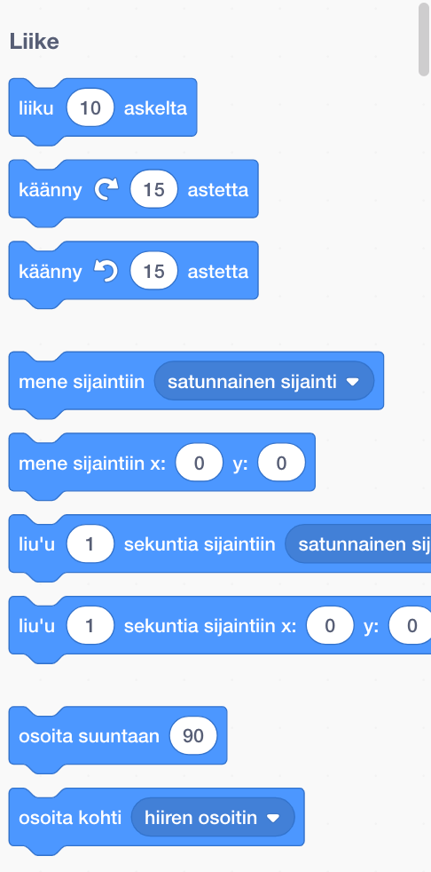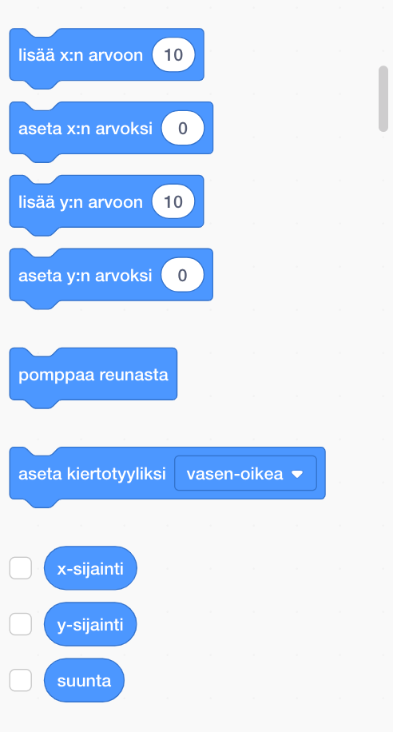
Ulkonäkö
Ulkonäkö-palikat on värikoodattu violeteiksi. Ulkonäkö-palikoilla kontrolloidaan hahmon ulkonäköä.
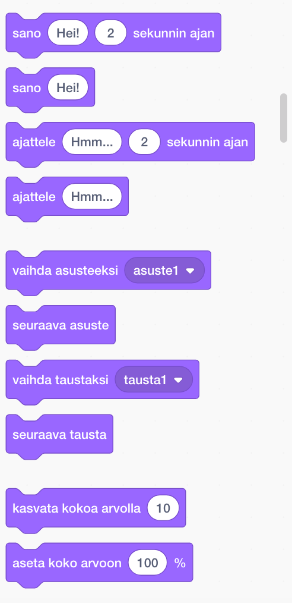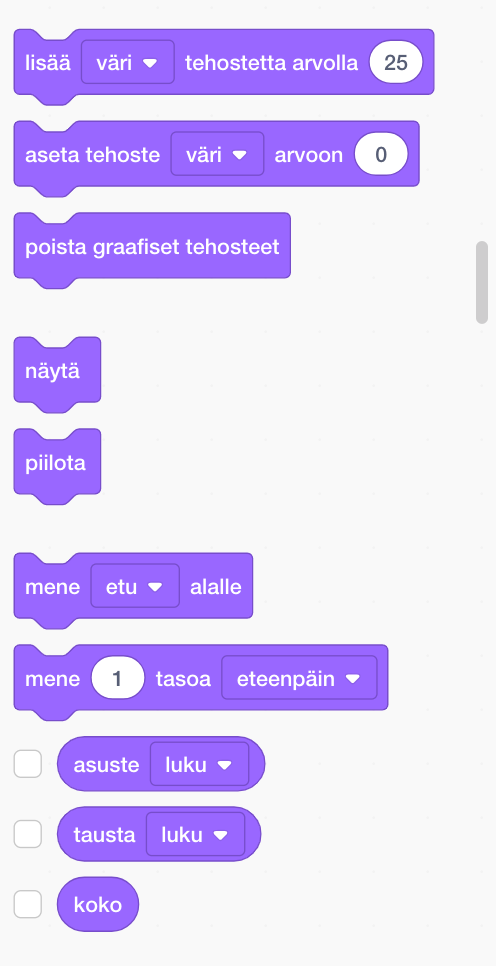
Ääni
Ääni-palikat on värikoodattu kirkkaan violeteiksi. Ääni-palikoilla kontrolloidaan ääniä ja MIDI-toimintoja.
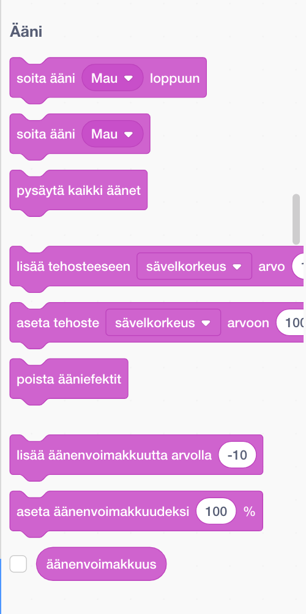Tapahtumat
Tapahtumat-palikat on värikoodattu keltaoransseiksi. Tapahtumat-palikoita käytetään laukaisemaan skriptejä (komentosarjoja ). Tapahtumat-palikoiden avulla voi saada hahmot välittämään viestejä toisilleen.
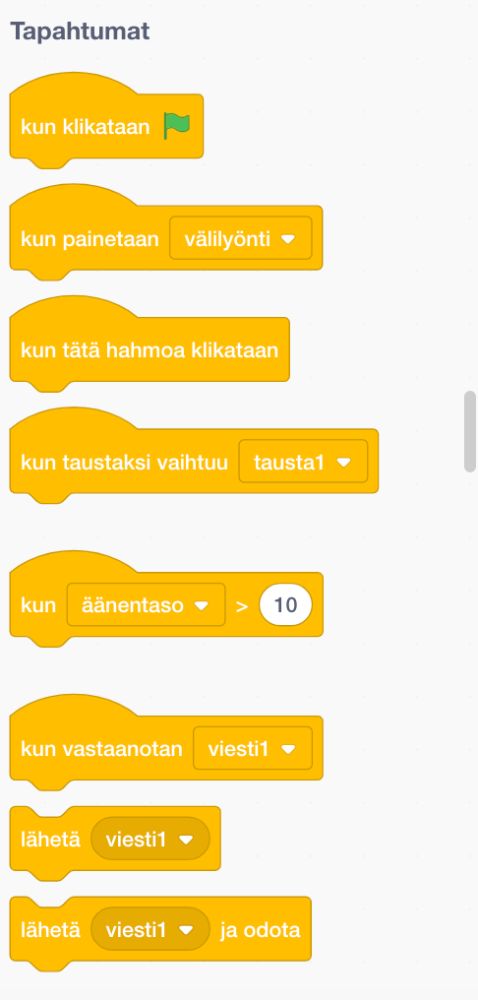Ohjaus
Ohjaus-palikat on värikoodattu oransseiksi. Ohjaus-palikoita käytetään ohjaamaan skriptejä. Ohjaus-palikoissa on silmukoita ja ehtolauseita.
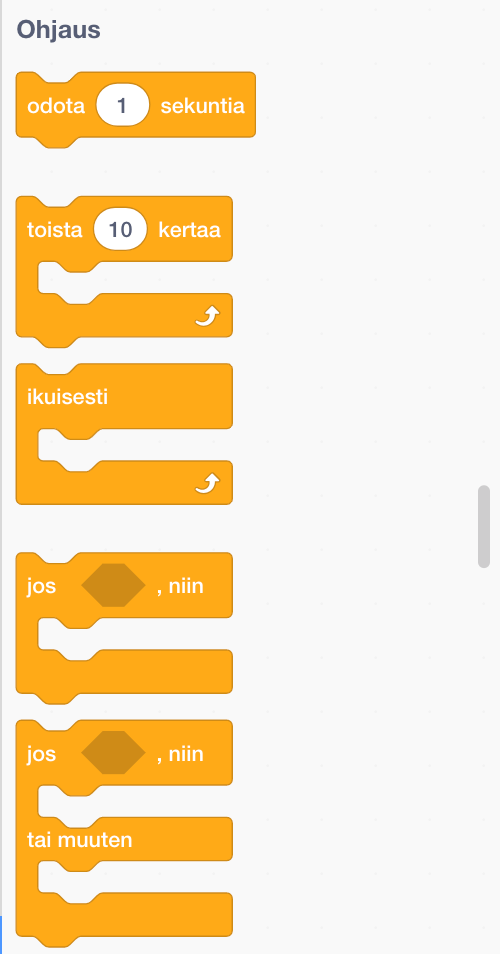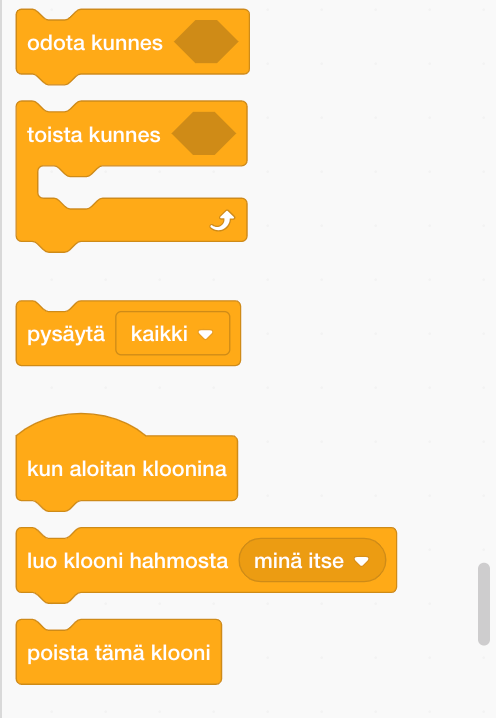
Tuntoaisti
Tuntoaisti-palikat on värikoodattu sinivihreiksi. Tuntoaisti-palikoita käytetään havaitsemaan erilaisia asioita projekteissa.
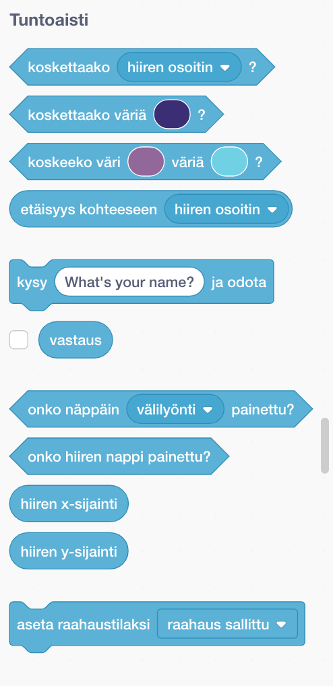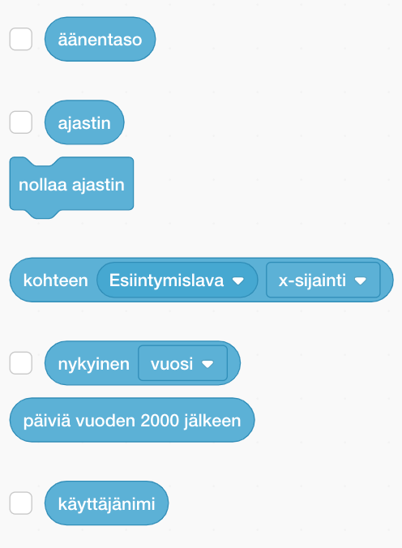
Toiminnot
Toiminnot-palikat on värikoodattu vaalean vihreiksi. Toiminnot-palikoita käytetään matemaattisten yhtälöiden ja merkkijonojen (tekstin) käsittelyyn.
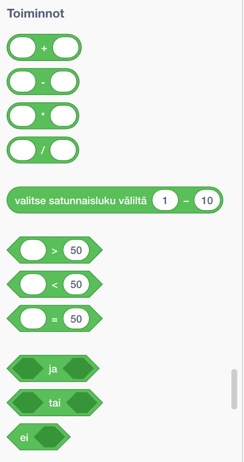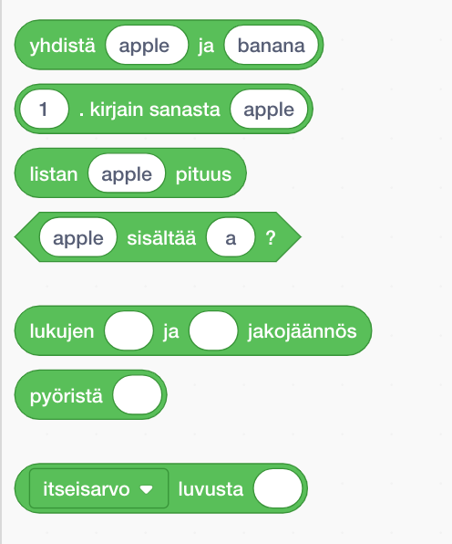
Muuttujat
Muuttujat-palikat on värikoodattu tumman oransseiksi. Muuttuja-palikoita käytetään luotaessa muuttujia arvojen ja merkkijonojen (tekstien) säilyttämistä varten. Siellä voi myös luoda Lista-palikoita. Lista-palikoilla voidaan luoda ja käsitellä listoja.
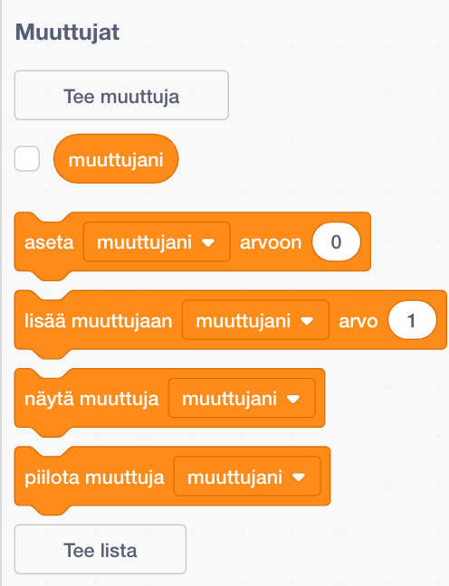Lohkoni
Lohkoni-palikat on värikoodattu tumman ruusun värisiksi. Lohkoni-palikoilla voi luoda uusia palikoita.
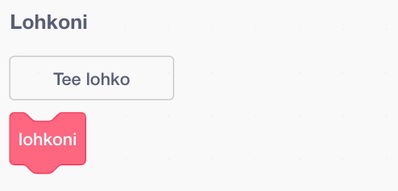